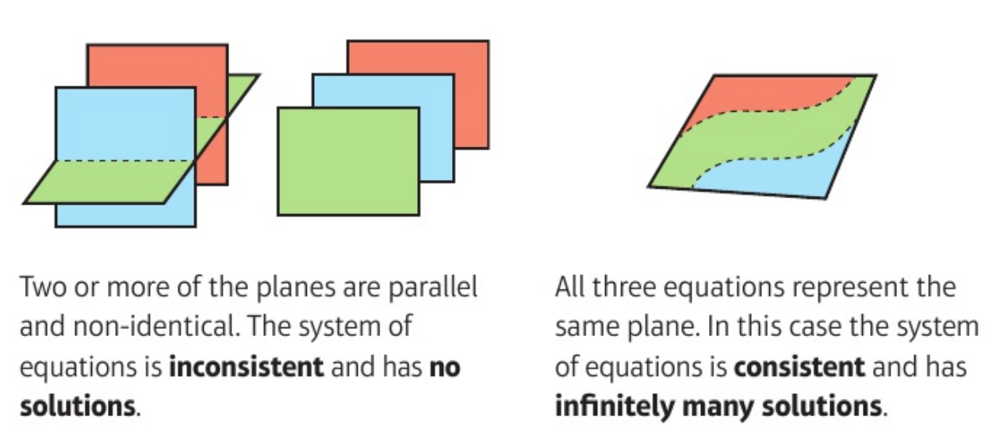

5 Determinants and inverses
5.1 Introduction
Consider a linear map \[\begin{align*} T : \mathbb{R}^n \to \mathbb{R}^n. \end{align*}\] If \(T\) is invertible then \[\begin{align*} \underbrace{\ker T = \{ \underline{0} \}}_\text{because $T$ is one-to-one} \text{ and } \underbrace{\operatorname{Im} T = \mathbb{R}^n}_\text{$T$ is onto}. \end{align*}\] These conditions are equivalent by rank-nullity theorem 4.1. Conversely, if these conditions hold, then \[\begin{align*} \underline{e}_1' &= T(\underline{e}_1), \dots, \underline{e}_n' = T(\underline{e}_n) \\ \end{align*}\] is a basis (where \(\{ \underline{e}_i \}\) is the standard basis) and we can define a linear map \(T^{-1}\) by \(T^{^-1}(\underline{e}_1') = \underline{e}_1, \dots, T^{-1}(\underline{e}_n') = \underline{e}_n\).
How can we test whether the conditions holds from matrix \(M\) representing \(T:\) \(T(\underline{x}) = M \underline{x}\) and how can we find \(M^{-1}\) when they do hold?
For any \(M\) (\(n \times n\)) we will define a related matrix \(\widetilde{M}\) (\(n \times n\)) and a scalar, the determinant \(\det M\) or \(| M |\) such that \[\begin{align} \widetilde{M} M = (\det M )I \tag{5.1} \end{align}\] Then if \(\det M \neq 0\), \(M\) is invertible with \[\begin{align*} M^{-1} = \frac{1}{\det M} \widetilde{M}. \end{align*}\]
For \(n = 2\) we found in Matrix Inverses that (5.1) holds with \[\begin{align*} M &= \begin{pmatrix} M_{11} & M_{12} \\ M_{21} & M_{22} \end{pmatrix} \text{ and } \widetilde{M} = \begin{pmatrix} M_{22} & -M_{12} \\ -M_{21} & M_{11} \end{pmatrix} \\ \det M &= \begin{vmatrix} M_{11} & M_{12} \\ M_{21} & M_{22} \end{vmatrix} = M_{11} M_{22} - M_{12} M_{21} \\ &= [M \underline{e}_1, M \underline{e}_2] \\ &= [\underline{C}_1 (M), \underline{C}_2 (M)] \\ &= \epsilon_{ijk} M_{i1} M_{j2} \end{align*}\] The factor by which areas are scaled under \(M\) \[\begin{align*} \det M \neq 0 &\iff \{ M \underline{e}_1, M \underline{e}_2 \} \text{ are linearly independent} \\ &\iff \operatorname{Im}(M) = \mathbb{R}^2 \end{align*}\]
For \(n = 3\) consider similarly \[\begin{align*} [M \underline{e}_1, M \underline{e}_2, M \underline{e}_3]& \text{ (scalar triple product)} \\ &= [\underline{C}_1 (M), \underline{C}_2 (M), \underline{C}_3 (M)] \\ &= \epsilon_{ijk} M_{i1} M_{j2} M_{k3} \\ &= \det M, \text{ defn for $n = 3$}. \end{align*}\] This is the factor by which volumes are scaled under \(M\) and \[\begin{align*} \det M \neq 0 &\iff [M \underline{e}_1, M \underline{e}_2, M \underline{e}_3] \text{ are linearly independent} \\ &\iff \operatorname{Im}(M) = \mathbb{R}^3 \end{align*}\]
Now define \(\widetilde{M}\) from \(M\) using row/ column notation \[\begin{align*} \underline{R}_1 (\widetilde{M}) &= \underline{C}_2 (M) \wedge \underline{C}_3 (M) \\ \underline{R}_2 (\widetilde{M}) &= \underline{C}_3 (M) \wedge \underline{C}_1 (M) \\ \underline{R}_3 (\widetilde{M}) &= \underline{C}_1 (M) \wedge \underline{C}_2 (M) \\ \text{and note that} \\ (\widetilde{M} M)_{ij} &= \underline{R}_i (\widetilde{M}) \cdot \underline{C}_j (M) \\ &= \underbrace{(\underline{C}_1 (M) \cdot \underline{C}_2 (M) \wedge \underline{C}_3 (M))}_{\det M} \delta_{ij} \end{align*}\]
Example 5.1 \[\begin{align*} M &= \begin{pmatrix} 1 & 3 & 0 \\ 0 & -1 & 2 \\ 4 & 1 & -1 \end{pmatrix} \\ \underline{C}_2 \wedge \underline{C}_3 &= \begin{pmatrix}3 \\-1 \\1\end{pmatrix} \wedge \begin{pmatrix} 0 \\ 2 \\ -1 \end{pmatrix} = \begin{pmatrix} -1 \\ 3 \\ 6 \end{pmatrix} \\ \underline{C}_3 \wedge \underline{C}_1 &= \begin{pmatrix} 0 \\ 2 \\ -1 \end{pmatrix} \wedge \begin{pmatrix}1 \\0 \\4\end{pmatrix} = \begin{pmatrix} 8 \\ -1 \\ -2 \end{pmatrix} \\ \underline{C}_1 \wedge \underline{C}_2 &= \begin{pmatrix} 1 \\ 0 \\ 4 \end{pmatrix} \wedge \begin{pmatrix}3 \\-1 \\1\end{pmatrix} = \begin{pmatrix} 4 \\ 11 \\ -1 \end{pmatrix} \\ \widetilde{M} &= \begin{pmatrix} -1 & 3 & 6 \\ 8 & -1 & -2 \\ 4 & 11 & -1 \end{pmatrix} \\ \widetilde{M} M &= (\det M) I \text{ where} \\ \det M &= \underline{C}_1 \cdot \underline{C}_2 \wedge \underline{C}_3 = 23. \end{align*}\]
5.2 \(\epsilon\) and Alternating Forms
5.2.1 \(\epsilon\) and Permutation
Recall: a permutation \(\sigma\) on the set \(\{1, 2, \dots, n \}\) is a bijection from this set to itself, specified by list \(\sigma(1), \sigma(2), \sigma(n)\). Permutation \(\sigma\) form a group, the symmetric group \(S_n\) of order \(n!\). The sign or signature \(\epsilon(\sigma) = (-1)^k\) where \(k\) is the number of transpositions (two cycles, this is well defined). The alternating or \(\epsilon\) symbol in \(\mathbb{R}^n\) or \(\mathbb{C}^n\) is defined by \[\begin{align*} \epsilon_{ij \dots l} &= \begin{cases} +1 & \text{if } i, j, \dots, l \text{ is an even permutation} \\ -1 & \text{if } i, j, \dots, l \text{ is an odd permutation} \\ 0 & \text{else} \end{cases} \\ \epsilon(\sigma) &= (-1)^k \text{ with $\sigma$ product of $k$ transpositions} \\ &= \pm 1. \end{align*}\] If \(\sigma\) is any permutation of \(1, 2, \dots, n\) then \[\begin{align*} \epsilon_{\sigma(1) \sigma(2) \dots \sigma(n)} &= \epsilon(\sigma). \end{align*}\]
Lemma 5.1 \[\begin{align*} \epsilon_{\sigma(i) \sigma(j) \dots \sigma(l)} = \epsilon(\sigma) \epsilon_{ij \dots l} \end{align*}\] \(\epsilon\) is totally antisymmetric.
Proof. If \(i, j, \dots l\) is not a permutation of \(1, 2, \dots, n\) then \(RHS = LHS = 0\).
If \(i = \rho(1), j = \rho(2), \dots, l = \rho(n)\) for some permutation \(\rho\) then
\[\begin{align*}
RHS &= \epsilon(\sigma) \epsilon (\rho) = \epsilon (\sigma \rho) = LHS.
\end{align*}\]
5.2.2 Alternating Forms and Linear (In)dependence
Given \(\underline{v}_1, \dots, \underline{v}_n \in \mathbb{R}^n\) or \(\mathbb{C}^n\) (these are \(n\) vectors) the alternating form combines them to produce a scalar, defined by \[\begin{align*} [\underline{v}_1, \underline{v}_2, \dots, \underline{v}_n] &= \epsilon_{ij \dots l}(\underline{v}_1)_i (\underline{v}_2)_j \dots (\underline{v}_n)_l \ \left(\sum \text{ convention}\right) \\ &= \sum_\sigma \epsilon(\sigma) (\underline{v}_1)_{\sigma(1)} (\underline{v}_2)_{\sigma(2)} \dots (\underline{v}_n)_{\sigma(n)} \ \left[\sum_\sigma \text{ means sum over all } \sigma \in S_n \right] \end{align*}\]
5.2.2.1 Properties
Multilinear \[\begin{align*} [\underline{v}_1, \dots, \underline{v}_{p-1}, \alpha \underline{u} + \beta \underline{w}, \underline{v}_{p+1}, \underline{v}_n] &= \alpha [\underline{v}_1, \dots, \underline{v}_{p-1}, \underline{u}, \underline{v}_{p+1}, \underline{v}_n] + \beta [\underline{v}_1, \dots, \underline{w}, \underline{v}_{p+1}, \underline{v}_n] \end{align*}\]
Totally antisymmetric \[\begin{align*} [\underline{v}_{\sigma(1)}, \underline{v}_{\sigma(2)}, \dots \underline{v}_{\sigma(n)}] &= \epsilon (\sigma) [\underline{v}_1, \underline{v}_2, \dots, \underline{v}_n] \end{align*}\]
\[\begin{align*} [\underline{e}_1, \underline{e}_2, \dots, \underline{e}_n] = 1 \end{align*}\] for \(\underline{e}_i\) standard basis vectors.
Properties i, ii, iii fix the alternating form, and they also imply iv
If \(\underline{v}_p = \underline{v}_q\) for some \(p \neq q\) then \[\begin{align*} [\underline{v}_1, \dots, \underline{v}_p, \dots, \underline{v}_q, \dots, \underline{v}_n] &= 0 \end{align*}\] (from ii, exchanging \(\underline{v}_p \leftrightarrow \underline{v}_q\) changes sign of alternating from).
If \(\underline{v}_p = \sum_{i \neq p} \lambda_i \underline{v}\) then \[\begin{align*} [\underline{v}_1, \dots, \underline{v}_p, \dots, \underline{v}_n] &= 0 \end{align*}\] (sub in and use i and iv).
Example 5.2 \[\begin{align*} \require{cancel} \text{In } \mathbb{C}^4, \underline{v}_1 &= \begin{pmatrix}i \\0 \\0 \\2\end{pmatrix}, \underline{v}_2 = \begin{pmatrix}0 \\0 \\5i \\0\end{pmatrix}, \\ \underline{v}_3 &= \begin{pmatrix}3 \\2i \\0 \\0\end{pmatrix}, \begin{pmatrix}0 \\0 \\-i \\1\end{pmatrix} \\ \implies [\underline{v}_1, \underline{v}_2, \underline{v}_3, \underline{v}_4] &= 5i [\underline{v}_1, \underline{e}_3, \underline{v}_3, \underline{v}_4] \\ &= 5i [i \underline{e}_1 + \cancel{2 \underline{e}_4}, \underline{e}_3, \cancel{3 \underline{e}_1} + 2i \underline{e}_2, \cancel{-i \underline{e}_3} + \underline{e}_4] \\ &= 5i \cdot i \cdot 2i) [\underline{e}_1, \underline{e}_3, \underline{e}_2, \underline{e}_4] \\ &= (- 10 i) \cdot (-1) \\ &= 10i \end{align*}\] (in cancelling, we first cancel \(i \underline{e}_3\) as there is another lone \(\underline{e}_3\), then the \(2\underline{e}_4\) and finally the \(3\underline{e}_1\))
Note: properties i and iii follow immediately from definition
Proof (Property ii). \[\begin{align*} [\underline{v}_{\sigma(1)}, \underline{v}_{\sigma(2)}, \dots \underline{v}_{\sigma(n)}] &= \sum_\rho \epsilon (\rho) \underbrace{[\underline{v}_{\sigma(1)}]_{\rho(1)} \dots [\underline{v}_{\sigma(n)}]_{\rho(n)}}_\text{each term can be re-written as: } \text{ ($\sigma$ fixed)} \\ & [\underline{v}_1]_{\rho \sigma^{-1} (1)} \dots [\underline{v}_n]_{\rho \sigma^{-1} (n)} \\ &= \sum_\rho \epsilon (\sigma) \epsilon(\rho') [\underline{v}_1]_{\rho'(1)} \dots [\underline{v}_n]_{\rho'(n)} \text{ where } \rho' = \rho \sigma^{-1} \\ \text{ and } \sum_\rho &\text{ is equivalent to } \sum_{\rho'} \\ &= \epsilon(\sigma) [\underline{v}_1, \underline{v}_2, \dots, \underline{v}_n] \end{align*}\]
Proposition 5.1 \[\begin{align*} [\underline{v}_1, \underline{v}_2, \dots, \underline{v}_n] \neq 0 \iff \underline{v}_1, \dots, \underline{v}_n \text{ are linearly independent}. \end{align*}\]
Proof. \(\implies\):
Use property v.
If \(\underline{v}_1, \dots \underline{v}_n\) are linearly dependent then \(\sum \alpha_i \underline{v}_i = \underline{0}\) where not all coefficients are zero.
Suppose wlog that \(\alpha_p \neq 0\), then express \(\underline{v}_p\) as a linear combination of \(\underline{v}_i (i \neq p)\) and so
\[\begin{align*}
[\underline{v}_1, \underline{v}_2, \dots, \underline{v}_n] = 0.
\end{align*}\]
\(\Longleftarrow\):
Note that \(\underline{v}_1, \dots, \underline{v}_n\) being linearly independent means that they span (in \(\mathbb{R}^n\) or \(\mathbb{C}^n\)) so we can write the standard basis vectors as
\[\begin{align*}
\underline{e}_i &= A_{ai} \underline{v}_a \text{ for some } A_{ai} \in \mathbb{R} \text{ or } \mathbb{C}. \\
\text{But then} & \\
[\underline{e_1}, \dots, \underline{e}_n] &= [A_{a1} \underline{v}_a, A_{b2} \underline{v}_b, \dots, A_{cn} \underline{v}_c] \\
&= A_{a1} A_{b2} \dots A_{cn} [\underline{v}_a, \underline{v}_b, \dots, \underline{v}_c] \\
&= A_{a1} A_{b2} \dots A_{cn} \epsilon_{ab \dots c} [\underline{v}_1, \underline{v}_2, \dots, \underline{v}_n] \text{ from property ii} \\
LHS &= 1 \implies [\underline{v}_1, \underline{v}_2, \dots, \underline{v}_n] \neq 0.
\end{align*}\]
Example 5.2 are linearly independent.
5.3 Determinants in \(\mathbb{R}^n\) and \(\mathbb{C}^n\)
5.3.1 Definition
Definition 5.1 (Determinant) For an \(n \times n\) matrix \(M\) with columns \[\begin{align*} \underline{C}_a &= M \underline{e}_a \end{align*}\] the determinant \(\det M\) or \(|M| \in \mathbb{R}\) or \(\mathbb{C}\) if defined by \[\begin{align*} \det M &= [\underline{C}_1, \underline{C}_2, \dots, \underline{C}_n] \\ &= [M \underline{e}_1, M \underline{e}_2, \dots, M \underline{e}_n] \\ &= \epsilon_{ij \dots l} M_{i1} M_{j2} \dots M_{ln} \\ &= \sum_\sigma \epsilon(\sigma) M_{\sigma(1) 1} M_{\sigma(2) 2} \dots M_{\sigma(n) n} \end{align*}\]
Proposition 5.2 (Transpose Property) \[\begin{align*} \det M &= \det M^T \\ \text{so } \det M &= [\underline{R}_1, \underline{R}_2, \dots, \underline{R}_n] \\ &= \epsilon_{ij \dots l} M_{1i} M_{2j} \dots M_{nl} \\ &= \sum_\sigma \epsilon(\sigma) M_{1 \sigma(1)} M_{2 \sigma(2)} \dots M_{n \sigma(n)} \end{align*}\]
Example 5.3 In \(\mathbb{R}^3\) or \(\mathbb{C}^3\) \[\begin{align*} \det M &= \epsilon_{ijk} M_{i1} M_{j2} M_{k3} \\ &= M_{11} \begin{bmatrix} M_{22} & M_{23} \\ M_{32} & M_{33} \end{bmatrix} - M_{21} \begin{bmatrix} M_{12} & M_{13} \\ M_{32} & M_{33} \end{bmatrix} + M_{31} \begin{bmatrix} M_{12} & M_{13} \\ M_{22} & M_{23} \end{bmatrix} \end{align*}\]
\(\det M\) is a function of rows or columns of \(M\) that is
multilinear
totally anti-symmetric (or alternating)
\(\det I = 1\)
Theorem 5.1 \[\begin{align*} \det M \neq 0 &\iff \text{ columns of $M$ are linearly independent} \\ &\iff \text{ row of $M$ are linearly independent} \\ &\iff \operatorname{rank} M = n \quad (M \text{ is } n \times n) \\ &\iff \ker M = \{ \underline{0} \} \\ &\iff M^{-1} \text{ exists} \end{align*}\]
Proof. All equivalences follow immediately from earlier results including the discussion in Introduction.
Proof (Transpose property). Suffices to show \[\begin{align*} \sum_\sigma \epsilon(\sigma) M_{\sigma(1) 1} \dots M_{\sigma(n) n} &= \sum_\sigma \epsilon(\sigma) M_{1 \sigma(1)} \dots M_{n \sigma(n)} \end{align*}\] But in a given term on LHS \[\begin{align*} M_{\sigma(1) 1} \dots M_{\sigma(n) n} &= M_{1 \rho(1)} \dots M_{n \rho(n)} \end{align*}\] by reordering factors, where \(\rho = \sigma^{-1}\). Then \(\epsilon(\sigma) = \epsilon(\rho)\) and \(\sum_\sigma\) is equivalent to \(\sum_\rho\), so result follows.
5.3.2 Evaluating determinants: expanding by rows or columns
For \(M\), \(n \times n\), for each entry \(M_{ia}\) define the minor \(M^{ia}\) to be the determinant of \((n - 1) \times (n - 1)\) matrix obtained from deleting row \(i\) and column \(a\) from \(M\).
Proposition 5.3 \[\begin{align*} \det M &= \sum_i (-1)^{i + a} M_{ia} M^{ia} \hspace{.5cm} a \text{ fixed} \\ &= \sum_a (-1)^{i + a} M_{ia} M^{ia} \hspace{.5cm} i \text{ fixed} \end{align*}\] called expanding by (or about) column \(a\) or row \(i\) respectively.
Proof. See Cofactors and Determinants.
Example 5.4 \[\begin{align*} M &= \begin{pmatrix} i & 0 & 3 & 0 \\ 0 & 0 & 2i & 0 \\ 0 & 5i & 0 & -i \\ 2 & 0 & 0 & 1 \end{pmatrix}. \end{align*}\] Expand by row \(3\) to find \[\begin{align*} \det M &= \sum_a (-1)^{3 + a} M_{3a} M^{3a} \\ M_{31} &= M_{33} = 0 \\ M_{32} &= 5i,\ M^{32} = \begin{vmatrix} i & 3 & 0 \\ 0 & 2i & 0 \\ 2 & 0 & 1 \end{vmatrix} \\ M_{34} &= -i, M^{34} = \begin{vmatrix} i & 0 & 3 \\ 0 & 0 & 2i \\ 2 & 0 & 0 \end{vmatrix} \\ M^{32} &= i \begin{vmatrix}2i & 0 \\0 & 1\end{vmatrix} - 3 \begin{vmatrix} 0 & 0 \\ 2 & 1 \end{vmatrix} \text{ (row 1)} \\ &= i (2i) \\ &= -2 \\ M_{34} &= i \begin{vmatrix} 0 & 2i \\ 0 & 0 \end{vmatrix} + 3 \begin{vmatrix} 0 & 0 \\ 2 & 0 \end{vmatrix} \text{ (row 1)}\\ &= 0 \\ \det M &= (-1)^{3 + 2} 5i (-2) \\ &= 10i \\ \emph{or } \text{expand by column 2}: \\ \det M &= \sum_i (-1)^{2 + i} M_{i2} M^{i2} \\ &= (-1)^{2 + 3} M_{32} M^{32} \\ &= 10i. \end{align*}\] (Calculated this previously as example of alternating form in \(\mathbb{C}^4\))
Lemma 5.2 If \(M = \left( \begin{array}{c|c} A & O \\ \hline O & I \end{array} \right)\) block form with \(A\) a \(r \times r\) matrix; \(I \ (n - r) \times (n - r)\) identity, then \(\det M = \det A\).
Proof. For \(r = n - 1\), result follows by expanding about column \(n\) or row \(n\), and for \(r < n - 1\), continue process.
5.3.3 Simplifying determinants: Row and Column Operations:
From the definitions of \(\det M\) in terms of columns (a) or rows (i) and the properties above (including Alternating Forms and Linear (In)dependence) we note the following
5.3.3.1 Row or column Scalings
If \(\underline{R}_i \mapsto \lambda \underline{R}_i\) for some (fixed) \(i\)
or \(\underline{C}_i \mapsto \lambda \underline{C}_i\) for some (fixed) \(a\)
then \(\det M \mapsto \lambda \det M\).
If all rows or columns are scaled \[\begin{align*} M &\mapsto \lambda M, \\ \text{then } \det M &\mapsto \lambda^n \det M \end{align*}\]
5.3.3.2 Row or column Operations
If \(\underline{R}_i \mapsto \underline{R}_i + \lambda \underline{R}_j\) for \(i \neq j\)
or \(\underline{C}_a \mapsto \underline{C}_a + \lambda \underline{C}_b\) for \(a \neq b\)
then \(\det M \mapsto \det M\) as we can use multilinearity and then we have two rows being the same in one term so its 0.
5.3.3.3 Row or Column Exchanges
\[\begin{align*} \text{If } \underline{R}_i &\leftrightarrow \underline{R}_j \hspace{0.5cm} \text{for } i \neq j \\ \text{If } \underline{C}_a &\leftrightarrow \underline{C}_b \hspace{0.5cm} \text{for } a \neq b \\ \text{then } \det M &\mapsto -\det M. \end{align*}\]
Example 5.5 \[\begin{align*} A &= \begin{pmatrix} 1 & 1 & a \\ a & 1 & 1 \\ 1 & a & 1 \end{pmatrix},\ a \in \mathbb{C} \\ \underline{C}_1 &\mapsto \underline{C}_1 - \underline{C}_3 \\ \det A &= \det \begin{pmatrix} 1 - a & 1 & a \\ a - 1 & 1 & 1 \\ 0 & a & 1 \end{pmatrix} \\ &= (1 - a) \det \begin{pmatrix} 1 & 1 & a \\ -1 & 1 & 1 \\ 0 & a & 1 \end{pmatrix} \\ \underline{C}_2 &\mapsto \underline{C}_2 - \underline{C}_3 \\ \det A &= (1 - a) \det \begin{pmatrix} 1 & 1-a & a \\ -1 & 0 & 1 \\ 0 & a-1 & 1 \end{pmatrix} \\ &= (1 - a)^2 \det \begin{pmatrix} 1 & 1 & a \\ -1 & 0 & 1 \\ 0 & -1 & 1 \end{pmatrix} \\ \underline{R}_1 &\mapsto \underline{R}_1 + \underline{R}_2 + \underline{R}_3 \\ \det A &= (1 - a)^2 \det \begin{pmatrix} 0 & 0 & a + 2 \\ -1 & 0 & 1 \\ 0 & -1 & 1 \end{pmatrix} \\ &= (1 - a)^2 (a + 2) \begin{vmatrix} -1 & 0 \\ 0 & -1 \end{vmatrix} \\ &= (1 - a)^2 (a + 2) \end{align*}\]
5.3.4 Multiplicative Property
Theorem 5.2 For \(n \times n\) matrices \(M\) and \(N\)
\[\begin{align*}
\det (MN) = \det M \det N
\end{align*}\]
This is based on the following lemma
Lemma 5.3 \[\begin{align*} \epsilon_{i_1 \dots i_n} M_{i_1 a_1} \dots M_{i_n a_n} &= (\det M) \epsilon_{a_1 \dots a_n} \end{align*}\]
Proof (Proof of Theorem). \[\begin{align*} \det (MN) &= \epsilon_{i_1 \dots i_n} (MN)_{i_1 1} \dots (MN)_{i_n n} \\ &= \epsilon_{i_1 \dots i_n} M_{i_1 k_1} N_{k_1 1} \dots M_{i_n k_n} N_{k_n n} \\ &= \epsilon_{i_1 \dots i_n} M_{i_1 k_1} \dots M_{i_n k_n} N_{k_1 1} \dots N_{k_n n} \\ &= (\det M) \epsilon_{k_1 \dots k_n} N_{k_1 1} \dots N_{k_n n} \text{by lemma } \\ &= (\det M) (\det N) \end{align*}\]
Proof (Proof of Lemma). Use total antisymmetry of LHS and RHS and then check taking \(a_1 = 1, \dots, a_n = n\).
Example 5.6
If \(M = \left( \begin{array}{c|c} A & O \\ \hline O & B \end{array} \right)\) block form, with \(A\) \(r \times r\) and \(B\) \((n - r) \times (n - r)\) then \(\det M = \det A \det B\). Since \(\left( \begin{array}{c|c} A & O \\ \hline O & B \end{array} \right) = \left( \begin{array}{c|c} A & O \\ \hline O & I \end{array} \right) \left( \begin{array}{c|c} I & O \\ \hline O & B \end{array} \right)\) and we can use Lemma 5.2 above.
\[\begin{align*} M^{-1}M &= I \implies \det(M^{-1}) \det M = \det I = 1 \\ \text{so } \det(M^{-1}) &= (\det M)^{-1} \end{align*}\]
For \(R\) real and orthogonal, \[\begin{align*} R^T R &= I \implies \det(R^T) \det R = (\det R)^2 = 1 \\ \implies \det R &= \pm 1 \end{align*}\]
For \(U\) complex and unitary, \[\begin{align*} U^\dagger U = I &\implies \det(U^\dagger) \det U \\ &= \overline{\det(U)} \det(U) \\ &= |\det U|^2 = 1 \\ \implies |\det U| &= 1. \end{align*}\]
5.4 Minors, Cofactors and Inverses
5.4.1 Cofactors and Determinants
Consider column \(\underline{C}_a\) of matrix \(M\) (\(a\) fixed) and write \(\underline{C}_a = \sum_i M_{ia} \underline{e}_i\) in definition of \(\det\): \[\begin{align*} \det M &= [\underline{C}_1, \dots, \underline{C}_{a - 1}, \underline{C}_a, \underline{C}_{a + 1}, \dots, \underline{C}_n] \\ &= [\underline{C}_1, \dots, \underline{C}_{a - 1}, \sum_i M_{ia} \underline{e}_i, \underline{C}_{a + 1}, \dots, \underline{C}_n] \\ &= \sum_i M_{ia} \Delta_{ia} \hspace{0.5cm} \text{(no sum over $a$)} \\ \text{where the } &\emph{cofactor } \Delta_{ia} \text{ is defined by} \\ \Delta_{ia} &= [\underline{C}_1, \underline{C}_2, \dots, \underline{C}_{a- 1}, \underline{e}_i, \underline{C}_{a + 1}, \dots, \underline{C}_n] \\ &= \det \left( \begin{array}{c|c|c} A & \begin{array}{c} 0 \\ \vdots \\ 0 \end{array} & B \\ \hline \begin{array}{ccc} 0 & \dots & 0 \end{array} & 1 & \begin{array}{ccc} 0 & \dots & 0 \end{array} \\ \hline C & \begin{array}{c} 0 \\ \vdots \\ 0 \end{array} & D \end{array} \right) \\ &= (-1)^{n - a} (-1)^{n - i} \det \left( \begin{array}{c|c} \begin{array}{c|c} A & B \\ \hline C & D \end{array} & \begin{array}{c} 0 \\ \vdots \\ 0 \end{array} \\ \hline \begin{array}{ccc} 0 & \dots & 0 \end{array} & 1 \end{array} \right) \\ &= (-1)^{a + i} M^{i a} \\ \text{where } M^{ia} &= \det \left( \begin{array}{c|c} A & B \\ \hline C & D \end{array} \right) \text{by lemma } \\ \therefore \det M &= \sum_i M_{ia} \Delta_{ia} \\ &= \sum_i M_{ia} (-1)^{i + a} M^{ia} \end{align*}\][Similarly, considering row \(i\), find other expression]. 5.2. To get \(\Delta_{ia}\) we subtract column \(a\) with all other columns to get the row \(i\) as shown.
5.4.2 Adjugates and Inverses
Reasoning as in Cofactors and Determinants with \(\underline{C}_b = \sum_i M_{ib} \underline{e}_i\) \[\begin{align*} [\underline{C}_1, \dots, \underline{C}_{a - 1}, \underline{C}_b, \underline{a + 1}, \dots, \underline{C_n}] &= \sum_i M_{ib} \delta_{ia} \\ &= \begin{cases} \det M & \text{if } a = b \\ 0 & \text{if } a \neq b \end{cases} \\ \text{Hence } \sum_i M_{ib} \delta_{ia} &= \delta_{ab} \det M \\ \text{And similarly} \sum_a M_{ja} \delta_{ia} &= \delta_{ij} \det M. \end{align*}\] Let \(\Delta\) be the matrix of cofactors with entries \(\Delta_{ia}\), and define the adjugate \(\widetilde{M} = \operatorname{adj}(M) = \Delta^T\). Then the relations above become \[\begin{align*} \Delta_{ia} M_{ib} &= (\Delta^T)_{ai} M_{ib} \\ &= (\Delta^T M)_{ab} \\ &= (\widetilde{M} M)_{ab} \\ &= \delta_{ab} \det M \\ M_{ja} \Delta_{ia} &= (\widetilde{M} M)_{ji} \\ &= \delta_{ij} \det M. \end{align*}\] This justifies (5.1) with \[\begin{align*} \widetilde{M} &= \Delta^T \\ \Delta_{ia} &= (-1)^{i + a} M^{ia} \\ \text{we have } \widetilde{M}M &= M \widetilde{M} = (\det M) I. \end{align*}\]8
Hence if \(\det M \neq 0\) then \(M\) is invertible and \[\begin{align*} M^{-1} = \frac{1}{\det M} \widetilde{M}. \end{align*}\]
Example 5.7 Consider \[\begin{align*} A &= \begin{pmatrix} 1 & 1 & a \\ a & 1 & 1 \\ 1 & a & 1 \end{pmatrix},\ a \in \mathbb{C} \\ \end{align*}\], previously found in Example 5.5 \(\det A = (1 - a)^2 (a + 2)\). Hence \(A^{-1}\) exists if \(a \neq 1\), \(a \neq - 2\).
Matrix of cofactors is \[\begin{align*} \Delta &= \begin{pmatrix} 1 - a & 1 - a & a^2 - 1 \\ a^2 -1 & 1 - a & 1 - a \\ 1 - a & a^2 - 1 & 1 - a \end{pmatrix} \\ \text{e.g. } A^{12} &= \begin{vmatrix} a & 1 \\ 1 & 1 \end{vmatrix} \\ &= a - 1 \\ \Delta_{12} &= (-1)^{1 + 2} A^{12} \\ &= 1 - a \\ \widetilde{A} &= \Delta^T \\ A^{-1} &= \frac{1}{\det A} \widetilde{A} \\ &= \frac{1}{(1 -a) ( a + 2)} \begin{pmatrix} 1 & -(1 + a) & 1 \\ 1 & 1 & - (1 + a) \\ - (1 + a) & 1 & 1 \end{pmatrix}. \end{align*}\]
5.5 System of Linear Equations
5.5.1 Introduction and Nature of Solutions
Consider a system of \(n\) linear equations in \(n\) unknowns \(x_i\) written in vector/ matrix form \[\begin{align*} A \underline{x} &= \underline{b}, \hspace{0.5cm} \underline{x}, \underline{b} \in \mathbb{R}^n \text{ and } A \ n \times n \text{ matrix} \\ \text{i.e. } A_{11} x_1 + \dots + A_{1n} x_n &= b_1 \\ &\;\;\vdots \\ A_{n1} x_1 + \dots + A_{nn} x_n &= b_n \end{align*}\]
There are three possibilities:
\(\det A \neq 0 \implies A^{-1}\) exists \(\implies\) unique solution, \(\underline{x} = A^{-1} \underline{b}\)
\(\det A = 0\) and \(\underline{b} \notin \operatorname{Im} A \implies\) no solution.
\(\det A = 0\) and \(\underline{b} \in \operatorname{Im} A \implies \infty\) many solutions.
Elaboration: a solution exists iff \(A \underline{x}_0 = \underline{b}\) for some \(\underline{x}_0 \iff \underline{b} \in \operatorname{Im} A\). Then \(\underline{x}\) is also a solution iff \(\underline{u} = \underline{x} - \underline{x}_0\) satisfies \[\begin{align*} A \underline{u} &= \underline{0} \emph{ homogenous problem}. \text{Now } \det A \neq 0 &\iff \operatorname{Im} A = \mathbb{R}^n \\ &\iff \ker A = \{ \underline{0} \}. \end{align*}\] So in (i) there is a unique solutions and it can be found using \(A^{-1}\). \[\begin{align*} \text{But } \det A = 0 &\iff \operatorname{rank} A < n \\ &\iff \operatorname{null} A > 0 \end{align*}\] and then either \(\underline{b} \notin \operatorname{Im} A\) as in case (ii) or \(\underline{b} \in \operatorname{Im} A\) as in case (iii). If \(\underline{u}_1, \dots, \underline{u}_k\) is a basis for \(\ker A\) then general solution of homogenous problem is \(\underline{u} = \sum_{i=1}^{k} \lambda_i \underline{u}_i\).
Example 5.8 \(A \underline{x} = \underline{b}\) with \(A\) as in Example 5.7 and \(\underline{b} = \begin{pmatrix}1 \\c \\1\end{pmatrix}\), \(a, c \in \mathbb{R}\).
\(a \neq 1, -2\)
Then \(A^{-1}\) exists and we have a solutions for any \(c\): \[\begin{align*} \underline{x} &= A^{-1} \underline{b} \\ &= \frac{1}{(1- a)(a + 2)} \begin{pmatrix}2 - c - ca \\c - a \\c - a \end{pmatrix} \end{align*}\]\(a = 1\), \[\begin{align*} A &= \begin{pmatrix}1 & 1 & 1 \\1 & 1 & 1 \\1 & 1 & 1\end{pmatrix} \\ \operatorname{Im} A &= \left\{ \lambda \begin{pmatrix}1 \\1 \\1\end{pmatrix} \right\} \\ \ker A &= \operatorname{span} \left\{ \begin{pmatrix}-1 \\1 \\0\end{pmatrix}, \begin{pmatrix}-1 \\0 \\1\end{pmatrix} \right\} \\ b &\in \operatorname{Im} A \iff c = 1; \\ \text{particular solution } \underline{x}_0 &= \begin{pmatrix}1 \\0 \\0\end{pmatrix} \\ \text{general solution } \underline{x} &= \underline{x}_0 + \underline{u} \\ &= \begin{pmatrix}1 - \lambda - \mu \\ \lambda \\ \mu \end{pmatrix} \\ \end{align*}\] This is case (iii), and forms a plane of solutions. For \(a = 1, c \neq 1\) we have no solutions - case (ii).
\(a = -2\) \[\begin{align*} A &= \begin{pmatrix} 1 & 1 & -2 \\ -2 & 1 & 1 \\ 1 & -2 & 1 \end{pmatrix} \\ \operatorname{Im} A &= \operatorname{span} \left\{ \begin{pmatrix}1 \\-2 \\1\end{pmatrix}, \begin{pmatrix}1 \\1 \\-2\end{pmatrix} \right\} \\ \ker A &= \left \{ \lambda \begin{pmatrix}1 \\1 \\1\end{pmatrix} \right \} \\ \underline{b} &\in \operatorname{Im} A \iff c = 2, \text{ (case (iii))} \\ \text{particular solution } \underline{x}_0 &= \begin{pmatrix}1 \\0 \\0\end{pmatrix} \\ \text{general solution } \underline{x} &= \underline{x}_0 + \underline{u} \\ &= \begin{pmatrix}1 + \lambda \\ \lambda \\ \lambda \end{pmatrix} \\ \end{align*}\] If \(c \neq 2\), no solution, case (ii).
5.5.2 Geometric Interpretation in \(\mathbb{R}^3\)
Let \(\underline{R}_1, \underline{R}_2, \underline{R}_3\) be rows of \(A\) (\(3 \times 3\)).
\[\begin{align*} A \underline{u} = \underline{0} \iff \begin{cases} \underline{R}_1 \cdot \underline{u} = 0 \\ \underline{R}_2 \cdot \underline{u} = 0 \\ \underline{R}_3 \cdot \underline{u} = 0 \end{cases} \text{planes through $\underline{0}$, normals $\underline{R}_i (\neq \underline{0})$} \end{align*}\] So solutions of homogenous problem (finding \(\ker A\)) is given by intersection of these planes.
\(\operatorname{rank}(A) = 3 \implies\) normals are linearly independent and planes intersect in \(\underline{0}\).
\(\operatorname{rank}(A) = 3 \implies 2\) normals span a plane and planes intersect in a line and \(\dim \ker A = 1\).

Figure 5.1: looking along line of intersection of planes
\(\operatorname{rank}(A) = 1 \implies\) normals are parallel and planes coincide and \(\dim \ker A = 2\)

Figure 5.2: Three identical planes
Now consider instead \[\begin{align*} A \underline{x} &= \underline{b} \iff \begin{cases} \underline{R}_1 \cdot \underline{x} = b_1 \\ \underline{R}_2 \cdot \underline{x} = b_2 \\ \underline{R}_3 \cdot \underline{x} = b_3 \end{cases} \end{align*}\] planes with normals \(\underline{R}_i\) but not passing through \(\underline{0}\) unless \(b_i = 0\).
\(\operatorname{rank}(A) = 3 \iff \det A \neq 0\), normals are linearly independent; planes intersect in a point and get unique solution for any \(b\).
\(\operatorname{rank}(A) = 2 \implies\) planes may intersect in a line (as in homogenous case) but they may not:
Figure 5.3: No solutions
\(\operatorname{rank}(A) = 1 \implies\) planes may coincide (as in homogenous case) but they may not:
Figure 5.4: Three parallel or two identical and another parallel

5.5.3 Gaussian Elimination and Echelon Form
Consider \(A \underline{x} = \underline{b}\) with \(\underline{x} \in \mathbb{R}^n\), \(\underline{b} \in R^m\) and \(A \ m \times n\) matrix.
Gaussian elimination is a direct approach to solving system of equations:
\[\begin{align*}
A_{11} x_1 + \dots + A_{1n} x_n &= b_1 \\
&\;\;\vdots \\
A_{m1} x_1 + \dots + A_{mn} x_n &= b_m
\end{align*}\]
Example
\[\begin{align*} 3 x_1 + 2 x_2 + x_3 &= b_1 \tag{5.2} \\ 6 x_1 + 3 x_2 + 3 x_3 &= b_2 \tag{5.3} \\ 6 x_1 + 2 x_2 + 4 x_3 &= b_3 \tag{5.4} \end{align*}\]
Steps
subtract multiples of (5.2) from (5.3) and (5.4) to eliminate \(x_1\) \[\begin{align*} 0 - x_2 + x_3 &= b_2 - 2 b_1 \tag{5.5} \\ 0 - 2 x_2 + 2 x_3 &= b_3 - 2 b_1 \tag{5.6} \end{align*}\]
repeat this using (5.5) to eliminate \(x_2\) from (5.6): \[\begin{align*} 0 + 0 + 0 &= b_3 - 2 b_2 + 2 b_1 \tag{5.7} \end{align*}\] Now consider new system (5.2), (5.5), (5.7).
\(b_3 - 2 b_2 + 2 b_1 \neq 0 \implies\) no solutions
\(b_3 - 2 b_2 + 2 b_1 = 0 \implies \infty\) solutions, \(x_3\) is arbitrary and then \(x_2\) and \(x_1\) determined from (5.2), (5.5).
In general case we aim to carry out steps as in example until we obtain an equivalent system \(M\) is obtained from \(A\) by row operations including row exchanges and column exchanges which relabel variables \(x_i\).
Note \(x_{r + 1}, \dots, x_n\) are undetermined
\(d_{r + 1}, \dots, d_m = 0\) else no solution
and if this is satisfied then \(x_1, \dots, x_r\) can be determined successively.
\(r = \operatorname{rank} M = \operatorname{rank} A\).
If \(n = m\) then \(\det A = \pm det M\) and if \(r = n = m\) then \(\det M = M_{11} \dots M_{rr} \neq 0 \implies A\) and \(M\) are invertible.
\(M\) as above is an example of echelon form.